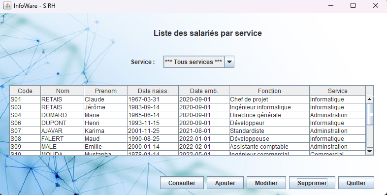

Le projet Infoware à coder en Java consistait à améliorer une application métier utilisable en entreprise afin de gérer les employés.
Le projet permet d'ajouter, consulter, modifier, supprimer un utilisateur ou les trier selon leur service attitré. Il fonctionne en lien avec une base de données recensant les données de chaque salarié.
Ci-dessous les différentes étapes expliquées une par une avec le projet exécutable téléchargeable ainsi qu'une image de l'interface principale de l'application.

Ce projet contenait pas moins de 10 étapes, en passant par la consultation des salariés, la suppression, la modification de leurs données dans le cas où c'est nécessaire et l'ajout d'un nouveau salarié.
L'étape 0 était l'organisation, la constitution d'un binôme avec qui le projet allait se monter.
L'étape 1 annonçait le début du projet en important la base de données fournie sur PhPMyAdmin via XAMPP ou d'autres logiciels pouvant créer un serveur Web directement sur la machine.
L'étape 2 était l'entrée dans le vif du sujet en commençant à gérer du code, concevoir la méthode Categorie en respectant les paramètres inclus et ajouter les éléments nécessaires comme la méthode toString pour afficher les données stockées dans les différentes méthodes ou attributs.
Pour l'étape 3, nous avions besoin de plus de maquettes afin de pouvoir agir directement sur la base de données, notamment la page de consultation, de suppression, la page d'ajout ou de modification.
L'étape 4 demandait davantages de classes pour lier ces actions à la base de données dont les classes DaoCategorie et sa classe de test respective TestDaoCategorie. Le DAO(Data Access Object) est la propriété permettant de faire une liaison entre une base de données et une application dans le langage Java.
L'étape 5 devait faire fonctionner un tri par service pour retrouver plus facilement les salariés avec une liste déroulante. En faisant remplir le tableau des salariés en visionnant la sélection du bouton déroulant le tri s'effectue par le code de catégorie qui récupère tous les salariés ayant le même code.
Grâce à l'étape 6, la consultation de la fiche d'un salarié est possible et on obtient toutes les données comme son âge, son identité ou même sa fonction.
L'étape 7 permettait de pouvoir supprimer un salarié en actualisatant la base de données et le tableau de l'application pour voir l'efficacité de l'action directement. On supprime grâce à son identifiant unique pour chaque utilisateur, ce qui permet de ne pas avoir de conflit en cas de même prénom ou de fonction.
L'ajout d'un nouveau salarié arrive à cette étape, ajouter un salarié en incluant son identité, sa date d'embauche pour l'inclure dans la base de données.
La modification d'un salarié était la dernière étape du projet mais le temps manquait, il permettait de modifier les données d'un client sans à changer directement dans la base de données.
L'étape finale étant de créer l'exécutable pour fournir à tout le monde le projet et de pouvoir l'essayer où l'on veut tant que la base de données est connectée.